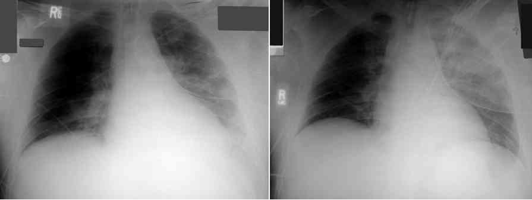
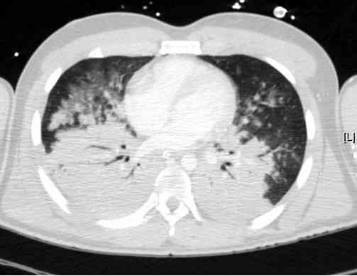
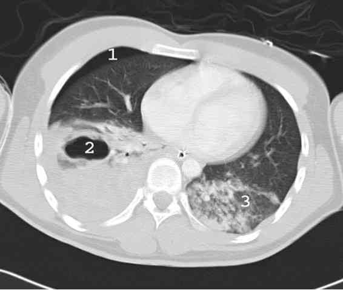

Bienvenue Sur Medical Education
Contusion pulmonaire
Spécialité : traumatologie /
Points importants
-
L'incidence des contusions pulmonaires est élevée (40%) s'intégrant le plus souvent dans le cadre d'un polytraumatisme
-
L'incidence varie selon le moyen diagnostic utilisé, la radiographie pulmonaire étant le moins sensible
-
Traumatisme fermé à haute énergie par choc direct ou par blast
-
Fréquente discordance radio-clinique
-
Les symptômes peuvent se développer sur 48 h
-
Pronostic lié au terrain, au volume pulmonaire contus et aux lésions thoraciques associées
-
Gravité liée à la présence d'une défaillance respiratoire et au risque d'hypoxie
Présentation clinique / CIMU
SIGNES FONCTIONNELS
-
Signes cliniques variés selon l'importance de l'atteinte pulmonaire (de l'hypoxie asymptomatique jusqu'au SDRA)
-
Signes respiratoires traduisant une hypoxie et/ou une hypercapnie :
-
dyspnée (polypnée), tirage intercostal, sus-sternal, sus-claviculaire
-
cyanose (hypoxémie)
-
sueurs, agitation, profil hypertensif (hypercapnie)
-
La présence d'une hémoptysie peut être évocatrice de contusion
CONTEXTE
Présentation clinique / CIMU
SIGNES FONCTIONNELS
- Signes cliniques variés selon l'importance de l'atteinte pulmonaire (de l'hypoxie asymptomatique jusqu'au SDRA)
-
Signes respiratoires traduisant une hypoxie et/ou une hypercapnie :
- dyspnée (polypnée), tirage intercostal, sus-sternal, sus-claviculaire
- cyanose (hypoxémie)
- sueurs, agitation, profil hypertensif (hypercapnie)
- La présence d'une hémoptysie peut être évocatrice de contusion
CONTEXTE
Traitement usuel
- Hémorragie intra-alvéolaire favorisée par la prise d'antiagrégant ou d'anticoagulant
Antécédents
- Des ATCD de tabagisme ou pathologie respiratoire aggraveront le pronostic
- Des atteintes de la crase sanguine favoriseront l'hémorragie intra-alvéolaire (hémophilie, Willebrandt...)
Circonstances de survenue
- Traumatisme sévère le plus souvent lié à un impact pariétal direct (accident de la circulation, chute de grande hauteur) ou indirect (blast)
EXAMEN CLINIQUE
- Auscultation à la recherche d'une asymétrie auscultatoire pouvant traduire un foyer de condensation ou un épanchement pleural
- Palpation du thorax à la recherche d'une lésion pariétale (fractures de côtes, volet thoracique), d'un emphysème sous-cutané
- Recherche de lésions associées thoraciques et extra-thoraciques
EXAMENS PARACLINIQUES SIMPLES
- Une SpO2 < 90% malgré l'oxygénothérapie définit un patient instable
- Mesure de la température : systématique à la recherche d'une hypothermie
- Hémoglobine capillaire : systématique à la recherche d'une baisse de l'hémoglobine
CIMU
- Tri 1 à 3
Signes paracliniques
BIOLOGIE
-
GDS : évaluation du retentissement des lésions sur l'altération des échanges gazeux. La profondeur de l'hypoxie doit être évaluée par détermination du rapport PaO2/FiO2
-
PaO2/FiO2 : indice à l'admission déterminant, prédictif du risque de détresse respiratoire aiguë secondaire. Chez les patients présentant une contusion pulmonaire isolée, un rapport PaO2/FiO2 < 250 à l'admission est le seul facteur indépendant significativement associé au pronostic
IMAGERIE
Radiographie pulmonaire
 _250 Photo Evolution d'une contusion pulmonaire gauche à 48 heures d'intervalle
- Examen prioritaire à réaliser à l'admission en salle de déchocage
- Aspect d'opacités alvéolaires non systématisées avec parfois images en verre dépoli. Des images aériques (pneumatocèles) peuvent être visibles au sein du parenchyme contus
- Indispensable de rechercher des lésions associées thoraciques
- Sous-estime l'étendue des lésions par rapport à la TDM, notamment en phase précoce, d'environ 50%. Peut ainsi être faussement rassurante et s'aggraver en moins de 24 h
Echographie pleuro-pulmonaire
- Devenue incontournable associée à la FAST échographie
- Permet dès l'arrivée du patient l'appréciation rapide de l'existence de zones de condensation pulmonaire ainsi que d'épanchements pleuraux aérique ou liquidien
TDM thoracique
 _251 Photo Aspect de contusion pulmonaire majeure dans les suites d'un traumatisme direct
 _252 Photo Bronchocèle post-traumatique
- Examen de référence avec une sensibilité de 100%
- Permet la recherche de lésions associées, en particulier thoraciques
- Aspect typique de la contusion pulmonaire : opacité alvéolaire non systématisée, parfois en verre dépoli. La condensation alvéolaire est souvent mal délimitée, inhomogène
- La zone contuse se situe le plus souvent en périphérie en regard de la zone d'impact ou à proximité des structures denses. Ces opacités correspondent à l'hémorragie intra-alvéolaire comblant les alvéoles plus ou moins associée à un oedème interstitiel
- Aspect fréquent d'images aériques (pneumatocèles) au sein de la zone contuse du fait de la lacération du parenchyme. Ces images témoignent d'une cinétique élevée. Elles ne modifient pas la prise en charge, ne se compliquant que rarement (surinfection), en évoluant vers la disparition spontanée complète
- Fréquence des atélectasies associées
- Appréciation TDM du volume pulmonaire contus : au delà de 20 à 30% de volume contus, le risque de survenue d'une insuffisance respiratoire aigue sévère augmente de manière significative (VPP 82%)
- Tout traumatisme fermé avec signes cliniques respiratoires et/ou anomalie à la radio pulmonaire et/ou échographique, doit bénéficier d'une TDM thoracique systématique
Diagnostic étiologique
-
Traumatisme sévère avec impact direct thoracique ou indirect par blast
Diagnostic différentiel
-
La distinction avec une inhalation, un trouble ventilatoire, une embolie graisseuse peut parfois être difficile au TDM, ces mécanismes pouvant par ailleurs se surajouter à la contusion
-
Pathologie préexistante à type de fibrose pulmonaire
Traitement
TRAITEMENT PREHOSPITALIER
Diagnostic différentiel
- La distinction avec une inhalation, un trouble ventilatoire, une embolie graisseuse peut parfois être difficile au TDM, ces mécanismes pouvant par ailleurs se surajouter à la contusion
- Pathologie préexistante à type de fibrose pulmonaire
Traitement
TRAITEMENT PREHOSPITALIER
Traitement de la détresse respiratoire et de l'hypoxie
- Oxygénothérapie au masque haute concentration
- Intubation et VAC si hypoxémie non stabilisée par l'oxygénothérapie
- VAC avec des Vt de 6-8 mL/Kg, PEEP de 4 à 8 cm H2O - réglage à adapter pour maintenir une pression de plateau < 30 cm H2O
Recherche et traitement d'un épanchement pleural compressif par exsufflation à l'aiguille ou thoracostomie de sauvetage
Traitement des autres détresses vitales
TRAITEMENT INTRAHOSPITALIER
Pas d'antibioprophylaxie recommandée
Prise en charge non spécifique de l'insuffisance respiratoire aiguë
- Chez le patient en ventilation spontanée, la stratégie doit être multimodale (oxygénothérapie/kinésithérapie respiratoire/analgésie)
- Gestion précoce et efficace de l'analgésie en cas d'atteinte pariétale associée (fractures de côtes, volet costal, atteintes pleurales)
- Analgésie par morphiniques en administration autocontrôlée ; utilisation de l'anesthésie locorégionale (anesthésie péridurale et bloc paravertébral) doit se faire de manière large, notamment en l'absence de contre-indications dans ce contexte (coagulopathie, mobilisation du patient impossible ou limitée...)
- Kinésithérapie respiratoire : stimulation du désencombrement, préservation d'une toux efficace, spirométrie incitative
- Mobilisation précoce au fauteuil sauf si CI liée à la présence d'autre traumatisme
- Support ventilatoire par VNI ou ventilation invasive si SpO2 < 90-92% malgré oxygénothérapie et/ou signes d'épuisement ventilatoire
Ventilation non-invasive
- Les données actuellement disponibles semblent en faveur de son utilisation dans un cadre rigoureux avec respect des contre-indications usuelles, notamment en cas de pneumothorax non drainé, de traumatisme facial grave, de troubles de conscience ou d'état de choc
- Peut être intéressante en alternative à l'intubation (mode VS-PEP ou en mode CPAP), ou en relais de la ventilation invasive, en cas de volet thoracique (stabilisation pneumatique interne)
Ventilation invasive
- Le recours à la ventilation invasive peut être lié au caractère hypoxémiant de la contusion (associée ou non à des dommages pariétaux thoraciques), ou du fait de lésions associées sévères nécessitant l'intubation
-
Des critères simples ont été définis pour recourir à l'intubation lors de la présence à l'admission de trois critères :
- fréquence respiratoire > 25/min
- tachycardie > 100/min
- PA systolique < 100 mmHg
- PaCO2 > 45 mmHg et/ou pH < 7,20 et/ou PaO2 < 60 mmHg (air ambiant)
- présence de lésions associées abdominales ou neurologiques
- La ventilation invasive se fait comme pour un SDRA : Vt 6 à 8 mL/Kg, PEEP 4 à 8. Ces paramètres sont à adapter pour obtenir une pression de plateau < 30 cm H2O
- Le décubitus ventral peut permettre une amélioration significative de l'oxygénation
- La jet ventilation en cas d'hypoxémie réfractaire ou de fistule bronchopleurale peut être une technique de recours ultime
ECMO
- C'est une solution très intéresante néanmoins réservée à certains centres spécialisés
-
L’utilisation de circuit enduit d’héparine permet de se passer de l’administration d’héparine à la phase initiale
Traitements adjuvants
- Chirurgie précoce des lésions associées orthopédiques et prise en charge post-opératoire agressive, afin de permettre les mobilisations précoces
- Limitation des apports hydriques et transfusionnels
Surveillance
CLINIQUE
-
Examen clinique : auscultation (asymétrie ?)
-
Recherche de signe d'épuisement ventilatoire
PARACLINIQUE
-
Hématose (SpO2 et/ou GDS)
-
Répétition de l'imagerie : radio de thorax et/ou scanner thoracique
Devenir / orientation
DEVENIR
-
Evolution progressive de la contusion : elle peut passer inaperçue sur le plan clinique, apparaissant au plus tard à la 24e h sur la radio de thorax, pour ensuite commencer à régresser et disparaître entre 10 et 15 jours
-
La dégradation clinique des 24 premières heures est classique, surtout en cas d'atteinte pleuro-pariétale et justifie une surveillance étroite
-
Insuffisance respiratoire aiguë et SDRA se développeront pour les forts volumes contus mais aussi en fonction du volume de produits sanguin transfusé
-
Risque de surinfection pulmonaire augmenté en fonction de l'importance du volume contus et/ou d'une inhalation associée
-
Embolies gazeuses exceptionnelles
-
Evolution à long terme classiquement favorable pour les formes modérées alors qu'il existe un risque de répercussions fonctionnelles non négligeables des contusions sévères
ORIENTATION
-
Patient en ventilation spontanée peu oxygéno-dépendant sans lésions pleuro-pariétales sévères associées : surveillance en UHCD
-
Patient en ventilation spontanée oxygéno-dépendant avec lésions pleuro-pariétales symptomatiques : surveillance clinique, monitorage SpO2 : unités de soins continus ou réanimation, notamment en cas de recours à la ventilation mécanique
-
Patient intubé sous ventilation mécanique : surveillance classique en réanimation
-
Pour les patients les plus graves (SpO2 < 90% sous FiO2 100% et/ou rapport PaO2/FiO2 < 100), il faut proposer un transfert dans les centres de traumatologie de niveau 1 et/ou à proximité d'un centre disposant d'une ECMO. Ce transfert est réalisé au mieux dès la prise en charge primaire en raison de l'évolution parfois très rapidement fatale de l'hypoxie associée au traumatisme
Mécanisme / description
MECANISME
-
Traumatisme avec impact direct (souvent associé à des fractures de côtes et/ou du sternum) et énergie cinétique élevée
-
Traumatisme sans impact direct mais par transmission d'une onde de choc (blast)
DESCRIPTION
-
Les lésions de contusions pulmonaires associent des lésions alvéolaires hémorragiques, des ruptures capillaires et des thromboses vasculaires, entraînant un oedème pulmonaire lésionnel dans les zones lésionnelles et périlésionnelles
-
Elles peuvent se compliquer d'embolies gazeuses d'origine systémique par rupture alvéoloveineuse, de pneumatocèles susceptibles de s'infecter, et d'hémoptysies parfois redoutables
-
Il est habituel de considérer que les contusions pulmonaires n'influencent pas, en elles-mêmes, le pronostic des traumatisés. Toutefois, il existe des formes rares mais particulièrement graves de contusions pulmonaires qui menacent directement le pronostic vital en raison d'hémoptysies massives ou de leurs conséquences sur l'hématose
-
Les lacérations du parenchyme pulmonaire, qu'elles soient directes (plaies, fractures de côtes) ou indirectes (décélération, blast), se manifestent par un pneumothorax et/ou un hémothorax et peuvent s'associer à des ruptures trachéo-bronchiques redoutables
Bibliographie
-
Keel M, Meier C. Chest injuries: what is new? Curr Opin Crit Care 2007 ; 13 : 674-9
-
Miller PR, Croce MA, Bee TK et al. ARDS after pulmonary contusion: accurate measurement of contusion volume identifies high-risk patients. J Trauma 2001 ; 51 : 223-8
-
Melloni G, Cremona G, Ciriaco P et al. Diagnosis and treatment of traumatic pulmonary pseudocysts. J Trauma 2003 ; 54 : 737-43
-
Brink M, Kool DR, Dekker HM et al. Predictors of abnormal chest CT after blunt trauma: a critical appraisal of the literature. Clin Radiol 2009 ; 64 : 272-83
-
Hoff SJ, Shotts SD, Eddy VA, Morris JA. Outcome of isolated pulmonary contusion in blunt trauma patients. Am Surg 1994 ; 60 : 138-42
-
Karmakar MK, Ho AM. Acute pain management of patients with multiple fractured ribs. J Trauma 2003 ; 54 : 615-25
-
Gregoretti C, Beltrame F, Lucangelo U et al. Physiologic evaluation of non invasive pressure support ventilation in trauma patient with acute respiratory failure. Intensive Care Med 1998 ; 24 : 785-90
-
Vidhani K, Kause J, Parr M. Should we follow ATLS guidelines for the management of traumatic pulmonary contusion: the role of non-invasive ventilatory support. Resuscitation 2002 ; 52 : 265-8
-
Barone JE, Pizzi WF, Nealon TF, Richman H. Indications for intubation in blunt chest trauma. J Trauma 1986 ; 26 : 334-8
-
Voggenreiter G, Neudeck F, Aufmkolk M et al. Intermittent prone positioning in the treatment of severe and moderate post traumatic acute lung injury. Crit Care Med 1999 ; 27 : 2375-82
-
Riou B, Zaier K, Kalfon P, Puybasset L, Coriat P, Rouby JJ. High frquency jet ventilation in life threatening bilateral pulmonary contusion. Anesthesiology 2001 ; 94 : 927-30
-
Cordell-Smith JA, Roberts N, Peek GJ, Firmin RK. Traumatic lung injury treated by extracorporeal membrane oxygenation (ECMO). Injury 2006 ; 37 : 29-32
-
Shanmuganathan K, Mirvis SE. Imaging diagnosis of nonthoracic injury. Radiol Clin North Am 1999 ; 37 : 533-51
-
Pape HS, Remmers D, Rice J et al. Appraisal of early evaluation of blunt chest trauma: development of a standardized scoring system for initial clinical decision making. J Trauma 2000 ; 49 : 496-504
-
Leone M, Brégeon F, Antonini F et al. Long term outcome in chest trauma. Anesthesiology 2008 ; 109 : 864-71
Devenir / orientation
DEVENIR
- Evolution progressive de la contusion : elle peut passer inaperçue sur le plan clinique, apparaissant au plus tard à la 24e h sur la radio de thorax, pour ensuite commencer à régresser et disparaître entre 10 et 15 jours
- La dégradation clinique des 24 premières heures est classique, surtout en cas d'atteinte pleuro-pariétale et justifie une surveillance étroite
- Insuffisance respiratoire aiguë et SDRA se développeront pour les forts volumes contus mais aussi en fonction du volume de produits sanguin transfusé
- Risque de surinfection pulmonaire augmenté en fonction de l'importance du volume contus et/ou d'une inhalation associée
- Embolies gazeuses exceptionnelles
- Evolution à long terme classiquement favorable pour les formes modérées alors qu'il existe un risque de répercussions fonctionnelles non négligeables des contusions sévères
ORIENTATION
- Patient en ventilation spontanée peu oxygéno-dépendant sans lésions pleuro-pariétales sévères associées : surveillance en UHCD
- Patient en ventilation spontanée oxygéno-dépendant avec lésions pleuro-pariétales symptomatiques : surveillance clinique, monitorage SpO2 : unités de soins continus ou réanimation, notamment en cas de recours à la ventilation mécanique
- Patient intubé sous ventilation mécanique : surveillance classique en réanimation
- Pour les patients les plus graves (SpO2 < 90% sous FiO2 100% et/ou rapport PaO2/FiO2 < 100), il faut proposer un transfert dans les centres de traumatologie de niveau 1 et/ou à proximité d'un centre disposant d'une ECMO. Ce transfert est réalisé au mieux dès la prise en charge primaire en raison de l'évolution parfois très rapidement fatale de l'hypoxie associée au traumatisme
Mécanisme / description
MECANISME
-
Traumatisme avec impact direct (souvent associé à des fractures de côtes et/ou du sternum) et énergie cinétique élevée
-
Traumatisme sans impact direct mais par transmission d'une onde de choc (blast)
DESCRIPTION
-
Les lésions de contusions pulmonaires associent des lésions alvéolaires hémorragiques, des ruptures capillaires et des thromboses vasculaires, entraînant un oedème pulmonaire lésionnel dans les zones lésionnelles et périlésionnelles
-
Elles peuvent se compliquer d'embolies gazeuses d'origine systémique par rupture alvéoloveineuse, de pneumatocèles susceptibles de s'infecter, et d'hémoptysies parfois redoutables
-
Il est habituel de considérer que les contusions pulmonaires n'influencent pas, en elles-mêmes, le pronostic des traumatisés. Toutefois, il existe des formes rares mais particulièrement graves de contusions pulmonaires qui menacent directement le pronostic vital en raison d'hémoptysies massives ou de leurs conséquences sur l'hématose
-
Les lacérations du parenchyme pulmonaire, qu'elles soient directes (plaies, fractures de côtes) ou indirectes (décélération, blast), se manifestent par un pneumothorax et/ou un hémothorax et peuvent s'associer à des ruptures trachéo-bronchiques redoutables
Bibliographie
-
Keel M, Meier C. Chest injuries: what is new? Curr Opin Crit Care 2007 ; 13 : 674-9
-
Miller PR, Croce MA, Bee TK et al. ARDS after pulmonary contusion: accurate measurement of contusion volume identifies high-risk patients. J Trauma 2001 ; 51 : 223-8
-
Melloni G, Cremona G, Ciriaco P et al. Diagnosis and treatment of traumatic pulmonary pseudocysts. J Trauma 2003 ; 54 : 737-43
-
Brink M, Kool DR, Dekker HM et al. Predictors of abnormal chest CT after blunt trauma: a critical appraisal of the literature. Clin Radiol 2009 ; 64 : 272-83
-
Hoff SJ, Shotts SD, Eddy VA, Morris JA. Outcome of isolated pulmonary contusion in blunt trauma patients. Am Surg 1994 ; 60 : 138-42
-
Karmakar MK, Ho AM. Acute pain management of patients with multiple fractured ribs. J Trauma 2003 ; 54 : 615-25
-
Gregoretti C, Beltrame F, Lucangelo U et al. Physiologic evaluation of non invasive pressure support ventilation in trauma patient with acute respiratory failure. Intensive Care Med 1998 ; 24 : 785-90
-
Vidhani K, Kause J, Parr M. Should we follow ATLS guidelines for the management of traumatic pulmonary contusion: the role of non-invasive ventilatory support. Resuscitation 2002 ; 52 : 265-8
-
Barone JE, Pizzi WF, Nealon TF, Richman H. Indications for intubation in blunt chest trauma. J Trauma 1986 ; 26 : 334-8
-
Voggenreiter G, Neudeck F, Aufmkolk M et al. Intermittent prone positioning in the treatment of severe and moderate post traumatic acute lung injury. Crit Care Med 1999 ; 27 : 2375-82
-
Riou B, Zaier K, Kalfon P, Puybasset L, Coriat P, Rouby JJ. High frquency jet ventilation in life threatening bilateral pulmonary contusion. Anesthesiology 2001 ; 94 : 927-30
-
Cordell-Smith JA, Roberts N, Peek GJ, Firmin RK. Traumatic lung injury treated by extracorporeal membrane oxygenation (ECMO). Injury 2006 ; 37 : 29-32
-
Shanmuganathan K, Mirvis SE. Imaging diagnosis of nonthoracic injury. Radiol Clin North Am 1999 ; 37 : 533-51
-
Pape HS, Remmers D, Rice J et al. Appraisal of early evaluation of blunt chest trauma: development of a standardized scoring system for initial clinical decision making. J Trauma 2000 ; 49 : 496-504
-
Leone M, Brégeon F, Antonini F et al. Long term outcome in chest trauma. Anesthesiology 2008 ; 109 : 864-71
Bibliographie
- Keel M, Meier C. Chest injuries: what is new? Curr Opin Crit Care 2007 ; 13 : 674-9
- Miller PR, Croce MA, Bee TK et al. ARDS after pulmonary contusion: accurate measurement of contusion volume identifies high-risk patients. J Trauma 2001 ; 51 : 223-8
- Melloni G, Cremona G, Ciriaco P et al. Diagnosis and treatment of traumatic pulmonary pseudocysts. J Trauma 2003 ; 54 : 737-43
- Brink M, Kool DR, Dekker HM et al. Predictors of abnormal chest CT after blunt trauma: a critical appraisal of the literature. Clin Radiol 2009 ; 64 : 272-83
- Hoff SJ, Shotts SD, Eddy VA, Morris JA. Outcome of isolated pulmonary contusion in blunt trauma patients. Am Surg 1994 ; 60 : 138-42
- Karmakar MK, Ho AM. Acute pain management of patients with multiple fractured ribs. J Trauma 2003 ; 54 : 615-25
- Gregoretti C, Beltrame F, Lucangelo U et al. Physiologic evaluation of non invasive pressure support ventilation in trauma patient with acute respiratory failure. Intensive Care Med 1998 ; 24 : 785-90
- Vidhani K, Kause J, Parr M. Should we follow ATLS guidelines for the management of traumatic pulmonary contusion: the role of non-invasive ventilatory support. Resuscitation 2002 ; 52 : 265-8
- Barone JE, Pizzi WF, Nealon TF, Richman H. Indications for intubation in blunt chest trauma. J Trauma 1986 ; 26 : 334-8
- Voggenreiter G, Neudeck F, Aufmkolk M et al. Intermittent prone positioning in the treatment of severe and moderate post traumatic acute lung injury. Crit Care Med 1999 ; 27 : 2375-82
- Riou B, Zaier K, Kalfon P, Puybasset L, Coriat P, Rouby JJ. High frquency jet ventilation in life threatening bilateral pulmonary contusion. Anesthesiology 2001 ; 94 : 927-30
- Cordell-Smith JA, Roberts N, Peek GJ, Firmin RK. Traumatic lung injury treated by extracorporeal membrane oxygenation (ECMO). Injury 2006 ; 37 : 29-32
- Shanmuganathan K, Mirvis SE. Imaging diagnosis of nonthoracic injury. Radiol Clin North Am 1999 ; 37 : 533-51
- Pape HS, Remmers D, Rice J et al. Appraisal of early evaluation of blunt chest trauma: development of a standardized scoring system for initial clinical decision making. J Trauma 2000 ; 49 : 496-504
- Leone M, Brégeon F, Antonini F et al. Long term outcome in chest trauma. Anesthesiology 2008 ; 109 : 864-71
Auteur(s) : Albrice LEVRAT, Jean-Stéphane DAVID